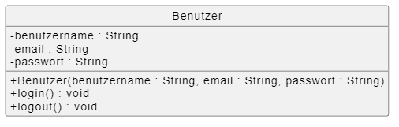
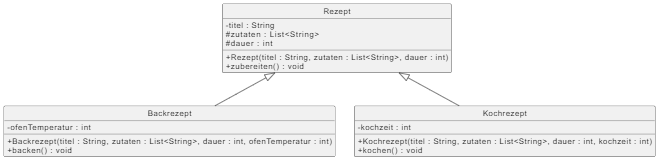
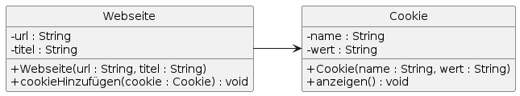
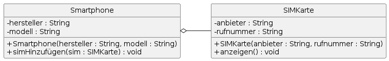
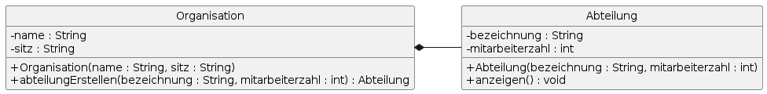

Definition
Ein Klassendiagramm zeigt die statische Struktur eines Systems durch Klassen, deren Attribute, Methoden und die Beziehungen untereinander.
Zweck & Verwendung
- Modellierung der Domäne: Abbildung von Geschäftsobjekten
- Architekturentwurf: Festlegung von Klassenhierarchien und Schnittstellen
- Dokumentation: Grundlage für Implementierung und Wartung
Praxisrelevanz
- Klarheit über Systemstruktur und Verantwortlichkeiten
- Vermeidung von Redundanzen durch klare Beziehungen
- Unterstützt Code-Generierung und API-Design
Grundelemente
- Klasse: Rechteck mit Namen, Attributen, Methoden
- Attribut: Variable in einer Klasse (Sichtbarkeit + Name + Typ)
- Methode: Operation in einer Klasse (Sichtbarkeit + Name + Parameter + Rückgabetyp)
- Sichtbarkeiten: `+` public, `-` private, `#` protected, `~` package
- Beziehungen:
- Vererbung: Pfeil mit offenem Dreieck
- Assoziation: Linie zwischen Klassen
- Aggregation: leeres Rautenende
- Komposition: ausgefülltes Rautenende
- Abhängigkeit: gestrichelte Linie mit Pfeil
- Realisierung: gestrichelter Pfeil mit offenem Dreieck
Beispiel Klassensymbol

Beispiel Vererbung

Beispiel (gerichtete) Assoziation

Beispiel Aggregation

Beispiel Komposition

OOP-Bezug
Klassendiagramme sind das Herzstück objektorientierter Analyse und dienen als Blaupause für Code in Sprachen wie Java oder C#.